<!doctype html>
<html lang="en">
<meta charset="utf-8">
<meta name="viewport" content="width=device-width, initial-scale=1">
<title>dsk: the README's images</title>
<!-- Open this file in a browser to see every image of the README move, on GitHub's light and dark backgrounds.
     python3 assets/build.py writes the images. -->
<style>
  body { margin: 0; font: 14px/1.5 system-ui, -apple-system, "Segoe UI", sans-serif; display: grid; grid-template-columns: 1fr 1fr; min-height: 100vh; }
  section { padding: 28px 32px 48px; }
  .light { background: #ffffff; color: #1f2328; }
  .dark { background: #0d1117; color: #e6edf3; }
  h1 { font-size: 15px; font-weight: 600; margin: 0 0 4px; }
  h2 { font: 12px ui-monospace, SFMono-Regular, Menlo, monospace; margin: 28px 0 8px; opacity: .65; }
  img { width: 100%; max-width: 880px; display: block; }
  @media (max-width: 1100px) { body { grid-template-columns: 1fr; } }
</style>
<section class="light">
  <h1>Light</h1>
  <h2>hero-light.svg</h2>
  <h2>run-light.svg</h2>
  <h2>flow-light.svg</h2>
  <h2>stats-light.svg</h2>
  <h2>cache-light.svg</h2>
</section>
<section class="dark">
  <h1>Dark</h1>
  <h2>hero-dark.svg</h2>
  <h2>run-dark.svg</h2>
  <h2>flow-dark.svg</h2>
  <h2>stats-dark.svg</h2>
  <h2>cache-dark.svg</h2>
</section>
</html>
